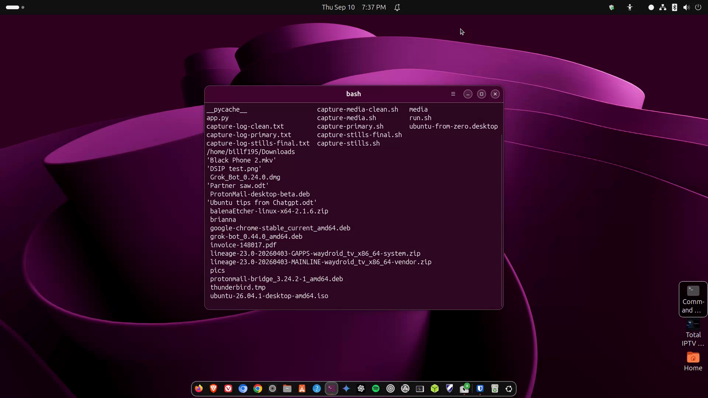

Safe vs sudo / password prompts
When Ubuntu asks for your password, what sudo means, and how to stay safe.

media/images/09-sudo.png with a GTR capture when ready.
Steps
- Your daily account can do normal work without a password. Installing software, updating the system, and changing some settings need admin rights.
- When a dialog asks for your password, that is usually PolicyKit — GUI apps requesting temporary admin rights. Type your login password.
- In the Terminal,
sudomeans “do this as superuser.” Example:sudo apt update. You type your password; nothing appears as you type. - sudo remembers you for a short time so you are not prompted every second. When in doubt, close the terminal when finished with admin tasks.
Safety rules
- Only enter your password for apps you started and trust.
- If a website says “run this curl | sudo bash” — stop and research. Prefer App Center or known package names.
- You are not supposed to log in as
rootfor daily use on Ubuntu Desktop.
Forgot password? Recovery is possible but outside this beginner path — keep a password manager and a recovery plan (Lesson 11 backups help).